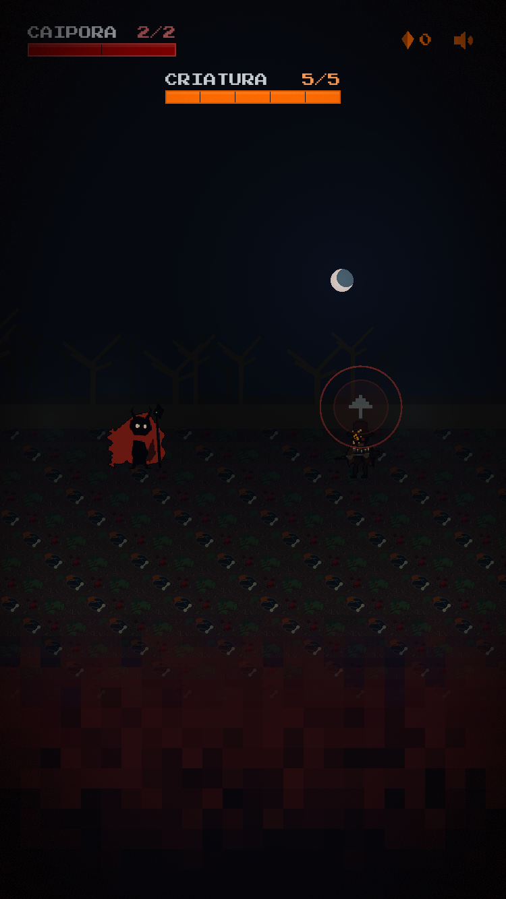
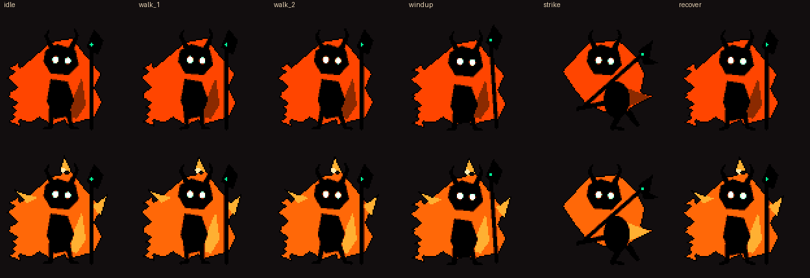
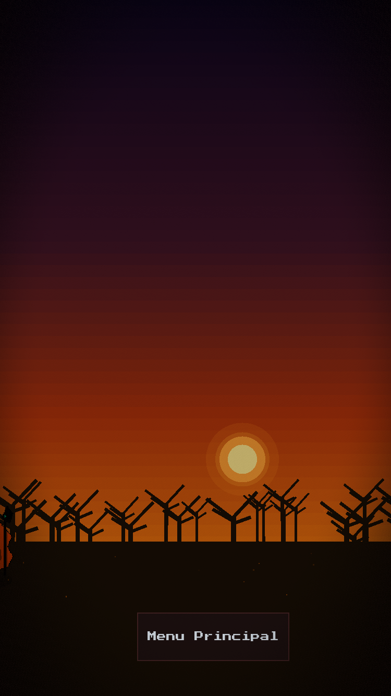
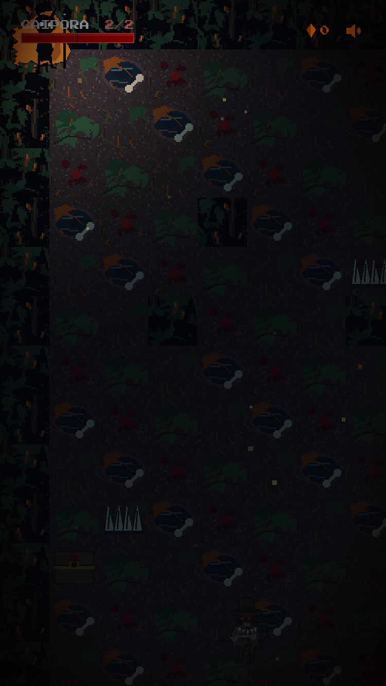

O que dormia na mata nao dormia so.
Entre trilhas tortas, rios escuros e capelas abandonadas, os pactos antigos entre humanos, bichos, mortos e encantados se romperam. A Caipora despertou. E a floresta cobra em sangue.




Timing eh tudo.
Aperte Espaco no frame exato. Acerte o critico. Esquive perfeito e contra-ataque. Cada erro custa sangue. Cada acerto, uma chance de sobreviver a mata.
- Combate por turnos + action command
- Roguelike procedural
- Horror folclórico brasileiro